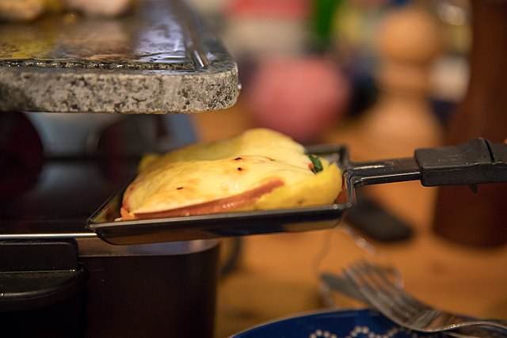
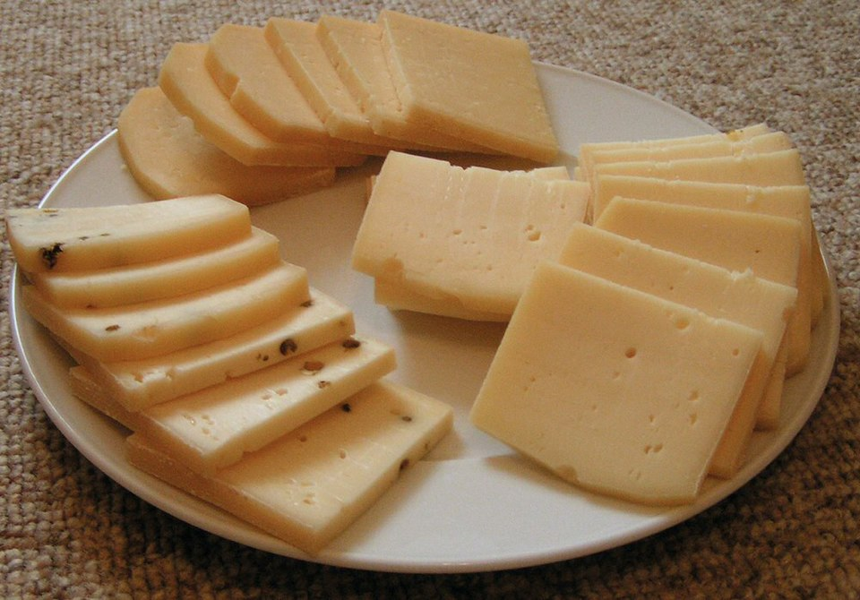

Raclette


Descripción
Queso del mismo nombre que se derrite y se sirve sobre patatas cocidas, pepinillos, cebollitas y a veces jamón o carne seca.
Ingredientes
- Queso raclette (por persona se calculan unos 150–200 g)
- Patatas pequeñas (cocidas con piel)
- Pepinillos en vinagre
- Cebollitas encurtidas
- Embutidos variados (jamón, salami, prosciutto, speck, etc.)
- Pan rústico (opcional)
- Tomates cherry
Preparación
- Lava bien las patatas pequeñas y cocínalas enteras con piel en agua con sal hasta que estén tiernas (20–25 min aprox.). Mantenlas calientes en una olla o envueltas.
- Corta el queso en lonchas que encajen bien en las paletitas del aparato. Si viene en bloque, quita la corteza si es muy dura.
- Coloca en pequeños platos o bowls los pepinillos, cebollitas, embutidos y verduras.
- Si quieres asar las verduras, colócalas cerca del aparato para que cada quien pueda ponerlas en la parrilla superior.
Cómo se come
- Cada persona pone una loncha de queso raclette en su espátula y la desliza en la parte de abajo del aparato para que se derrita.
- Mientras se funde, puedes preparar tu plato con patatas, encurtidos y lo que gustes.
- Una vez derretido, vierte el queso caliente sobre tus ingredientes.
Video